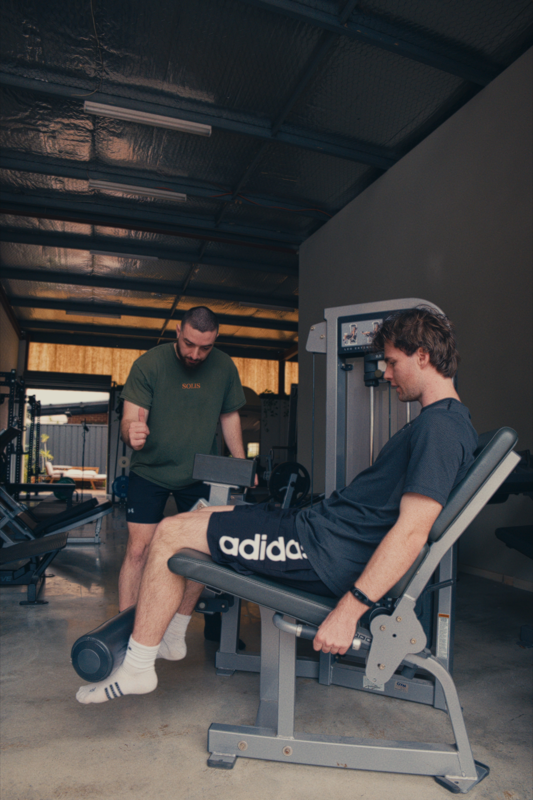
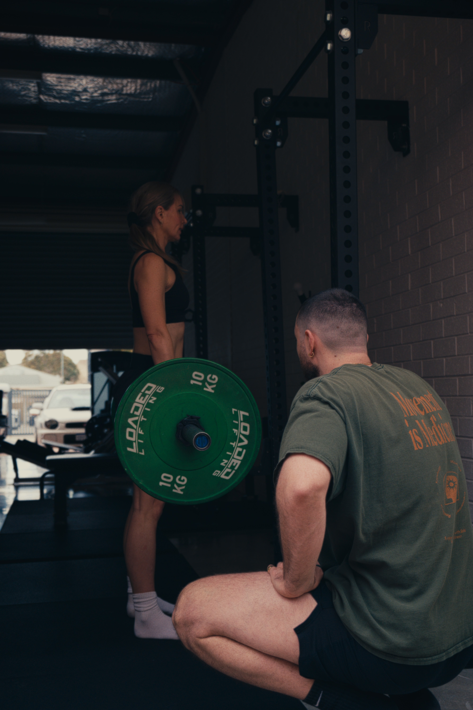
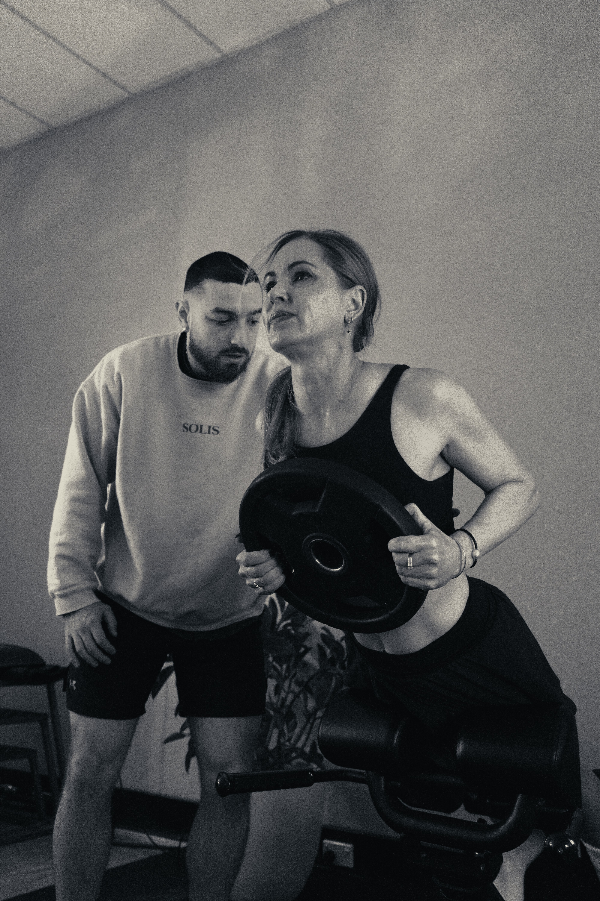

Personal Training In Subiaco.
Movement is Medicine, From Your First Session
At SOLIS, personal training is built around our philosophy of Movement is Medicine. Every new client starts with a conversation about their goals, whether that's to build strength, an aesthetic goal, combatting muscle atrophy & joint degeneration, managing chronic pain, or simply moving through daily life with more ease. From there, we run a range of baseline tests to understand your current limitations and, more importantly, where the real opportunities for growth are.
This is what makes training at SOLIS different: it's not a workout, it's a program built with purpose. Nothing produces better outcomes for chronic pain, mental health and long-term quality of life than purposeful, progressive movement applied consistently over time - not medication, not passive treatment, not rest. Movement. Every session meets you exactly where you are, removing barriers, and builds structure, with intention and care.

A Program Built Around You
Sessions are offered 1:1 or 1:2, and draw on a wide range of high-quality equipment - LifeFitness, Nautilus and Hammer Strength machines - matched with the expert knowledge of our trainers to design a program built intentionally around your specific goals, not pulled from a template. That combination is what allows us to achieve a rate of progress a pre-made program simply can't offer.
Goals at SOLIS tend to fall into a few categories: functional milestones like standing or sitting without pain, strength and rehabilitation goals for long-standing injuries, and aesthetic outcomes clients work toward once those foundations are in place. Programs progress through these in order, so strength and confidence are established before the more demanding work begins, and are adjusted continually as your needs change.

Training That Builds Resilience
This is the heart of our second pillar, Resilience - the understanding that whatever you're dealing with, pain, injury, stress or fatigue, the answer is almost always to build more capacity, not do less. The body and mind grow more resilient through the same process: controlled exposure, progressive challenge, and recovery. The goal isn't to avoid discomfort, but to expand what you can tolerate, until what once felt overwhelming becomes manageable.
How you think about your body shapes what you're willing to do with it. Many clients arrive believing they're too old, too unfit, or too injured to train properly, beliefs often reinforced by past experiences with programs that weren't built for them. Part of our work is challenging those beliefs with evidence, showing you through testing and progressive loading what your body can actually handle.
We look at the person in front of us, not just the goal or issue they walked in with. That means adjusting and progressing exercises as your needs change, working through setbacks and flare-ups without losing momentum, and building a level of resilience that carries well beyond the gym floor.

Training With Intention
Every session at SOLIS reflects our third pillar, Intention. In a world that rewards speed and productivity, there's something quietly powerful about slowing down and doing one thing well. Training with presence, fully focused on the movement in front of you, is mindfulness in practice — and it's also where the best results come from.
At SOLIS, personal training is the starting point for real, lasting change. It's about moving with confidence, understanding what your body is capable of, and building the strength and resilience to hold up to whatever life brings.
Book Your Personal Training Session